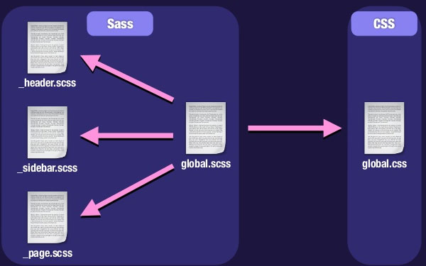
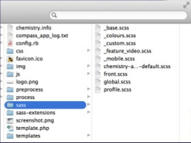

Преимущества SASS
Переменные
Больше не нужно беспокоится о том, чтобы запоминать hex-цвета для стилей или размер шрифта. Достаточно просто определить значения в самом начале, а затем можно использовать его в любом месте, где оно может нам понадобится:
$redColor: #cc0000;
$disabledColor: #bebebe;
$mediumTextSize: 14pt;
$smallTextSize: 12pt;
.panel a.active {
color: $redColor;
display: inline-block;
}
.panel button.disabled {
background-color: $disabledColor;
}
.content {
font-size: $mediumTextSize;
}
.footer .copyright {
font-size: $smallTextSize;
}
Вложенные правила
Вложенность, которая является одной из самых главных киллер-фич препроцессора SASS, поможет писать наиболее читаемый и компактный код.
Раньше бы мы написали так:
nav ul {
margin: 0;
padding: 0;
list-style: none;
}
nav ul li { display: inline-block; }
nav ul li a {
display: block;
padding: 6px 12px;
text-decoration: none;
}
body #main .value {
color: #eee;
}
body #main .value a.link {
color: #101010;
text-decoration: none;
}
...и были бы правы. Но SCSS позволяет написать тоже самое и более компактно:
nav {
ul {
margin: 0;
padding: 0;
list-style: none;
li {
display: inline-block;
a {
display: block;
padding: 6px 12px;
text-decoration: none;
}
}
}
}
body #main .value {
color: #eee;
a.link {
color: #101010;
text-decoration: none;
}
}
В послледнем варианте видно, что код стал более структруированным, в нем уже проще разобраться и
внести какие-либо изменения. Вложенность также позволяет писать правила для конктретных элементов, без
боязни за то, что где-то придется переопределять или усиливать селектор для корректой отработки блоков и неймспейсов
Готовые правила
В SASS широко распространено применение так называемых mixins (примеси), которые позволяют использовать какое-либо повторяющееся правило во многих местах, написав его однажды. Это выглядит очень привлекательно исходя из DRY принцпа написания кода (Don't Repeat Yourself). Mixins могут принимать входящие параметры, чем очень похожи на функции или методы из традиционных языков программирования. Пример:
@mixin border-radius($radius) {
-webkit-border-radius: $radius;
-moz-border-radius: $radius;
-ms-border-radius: $radius;
border-radius: $radius;
}
.box {
@include border-radius(10px);
position: relative;
top: 10px;
}
.slider {
@include border-radius(5px);
float: left;
}
Объединение стилей
Понятное дело, что в больших проектах требуется разделение стиля всего проекта на относительно маленьнкие файлы, например в соответствии с именованием модулей или разделов сайта. Также рекомендуется разделение стилей на отдельные файлы в зависимости от предназанчения, например:
@import 'reset.css'; // стили сброса стандартных правил браузера
@import 'typography.css'; // стили для шрифтов, ссылок и текста
Поэтому имеет смысл перед подключением этих стилей в production объединить их в один файл в соответсвии
с той последовательностью, которая нам необходима. Организация, объединение и компиляция стилей при помощи SASS выглядит как показано на рисунке:

Для создания маленького кусочка кода стилей достаточно поставить перед его именем нижнее подчеркивание (_имяФайла.scss) в папке SASS:

Наследование
Наследование в SASS позволяет импортировать правила стилей из одной секции проекта в другие. Это также позволяет сократить количество новых строчек кода и во многом упростить жизнь разработчика интерфейсов:
.message {
border: 1px solid #ccc;
padding: 10px;
color: #333;
}
.success {
@extend .message;
border-color: green;
}
.error {
@extend .message;
border-color: red;
}
.alarm {
@extend .message;
border-color: yellow;
}